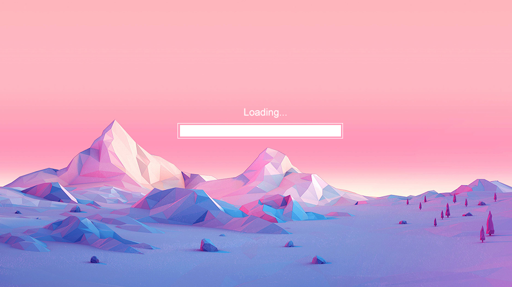
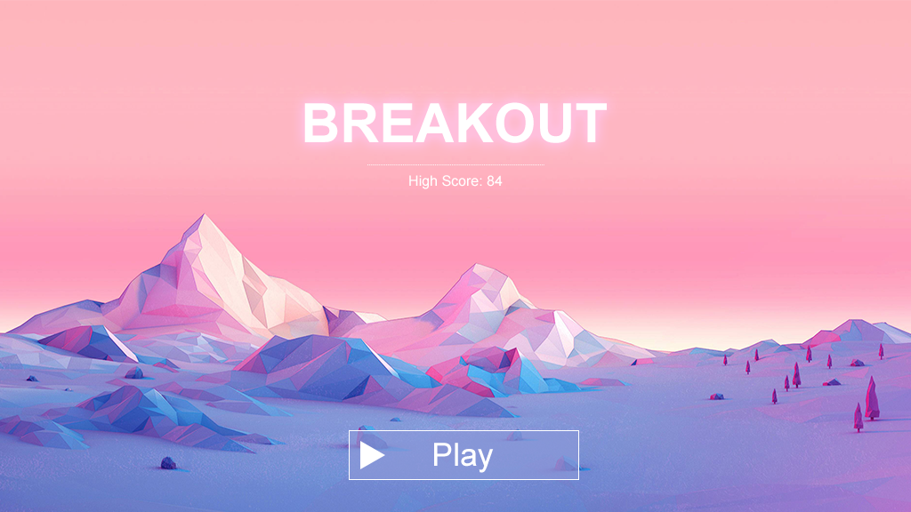
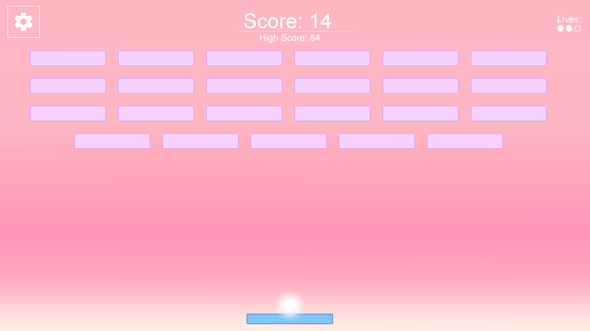
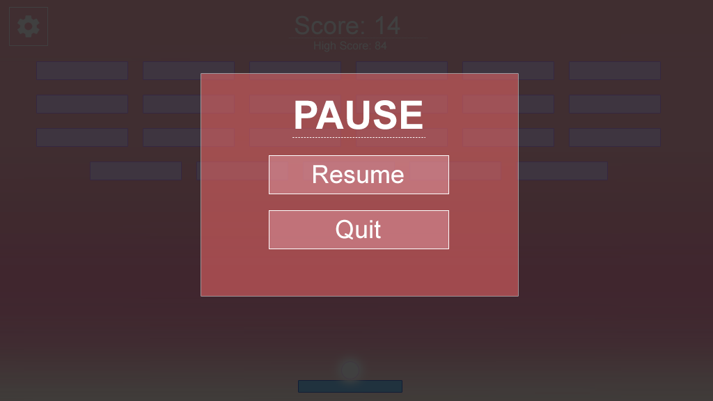
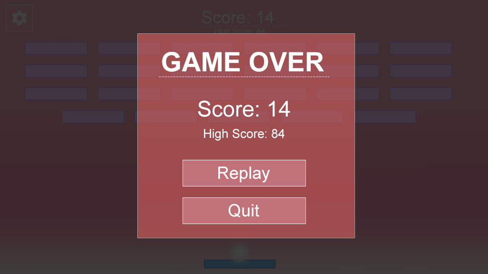

Introduction
Welcome to the Breakout test! The intention of this test is to understand your abilities when given an entirely new game framework to work in.
It has no time deadline, however we recommend spending no more than 4-6 hours on this test.
The game framework defined within this project is a custom implementation of a basic Entity Component System (ECS). It implements only the most critical parts of a framework needed to get you off the ground and working. It is likely that you will need to add your own custom classes and implementations in order to successfully finish this project.
By default, the framework is able to:
- Run at a specified frame rate, calling an update() and render() function each frame
- Load texture assets
- Detect basic mouse movement and input
- Display and transition between scenes. A scene holds a collection of entities.
- Add and parent entities. Entities can have their position, scale, and rotation modified.
- Render images within a scene via a component added to an entity.
- Render text within a scene via a component added to an entity.
- Render a button and respond to clicks via a component added to an entity.
Note that the above implementations may contain minor bugs and issues. If an implementation listed above is causing an issue in your code, it's up to you to fix it!
API Documentation
The API for the game engine has been documented via JSDoc. You can access this documentation by opening ./docs/index.html
The documentation provides high level descriptions of each class, method, and property within the core/ folder. It should be your main source of reference for structuring and implementing code.
Task Overview
The ask for this test is for you to implement a 'breakout' game. All assets you will need are located at ./assets/images/.
Core Task Breakdown
-
Set the game size & frame rate.
- The game should be rendered at 1024x576 at 60 frames per second.
-
Finish implementation of the Loading Scene.
- This class is located at ./src/breakout/scenes/LoadingScene.js
- This scene should load all necessary assets needed for the menus & gameplay.
- Make sure the asset position and sizing all match the sample as closely as possible.
- The loading bar should fill from left to right based on the completion progress of assets loaded.
- When all assets have been loaded, the loading scene should be replaced by the Splash Scene. 
-
Implement the Splash Scene.
- Make sure the asset position and sizing all match the sample as closely as possible.
- The high score should be dynamic and automatically update when a player has achieved a new score during gameplay. It should default to 0 if the player has no high score.
- The Play button should use 'breakout-btn-purple.png'. When hovered over with a mouse, it should swap to 'breakout-btn-purple-hover.png'.
- When the Play button is clicked, it should take the user into the Game Scene. 
-
Implement the Game Scene.
- Implement core breakout gameplay.
- The paddle moves based on the users horizontal mouse position. The center of the paddle should match the mouse position. The paddle should move regardless of if the player has their left mouse button down or not.
- The player starts with three lives. Each time the ball goes past their paddle and offscreen, they lose a life. Once all lives are lost, the game is over.
- At the start of each life, including at the start of gameplay, the ball is automatically attached to the paddle. When the player clicks their mouse, the ball launches from the paddle. During this time, the player should still be able to move the paddle around.
- The ball should bounce off the walls of the game space.
- The ball should bounce off the bricks in the game space. When a ball hits a brick, the brick disappears and the players score is incremented by 1.
- When all bricks have been destroyed, respawn them after a 2 second delay and increase the ball speed by 25%.
- The angle the ball bounces off the paddle should be modified slightly by the location it hits the paddle at. The further the ball is to the edge of the paddle, the more extreme the angle.
- Implement the scoring display in the HUD
- The high score should display the users high score. When it is overtaken during gameplay, it should auto-update along with the current score.
- The score should display the users current score within gameplay. This is reset each time the user replays the game.
- Implement the pause button. When pressed it should pause all gameplay and launch the Pause Scene over top of the game.
- The pause button should use 'breakout-btn-pause.png' and swap to 'breakout-btn-pause-hover.png' when a mouse hovers over it. 
- Implement core breakout gameplay.
-
Implement the Pause Scene.
- This sits over the game scene and should pause all game logic until resumed.
- The Resume button should exit the Pause Scene and resume gameplay.
- The Quit button should exit both the Pause Scene and the Game Scene and return the player to the Splash Scene.
- For both buttons, they should use 'breakout-btn-pink.png' and swap to 'breakout-btn-pink-hover.png' when a mouse hovers over them. 
-
Implement the Game Over Scene.
- This sits over top of the game scene once all lives have been lost.
- The score displayed is the score the player achieved in their last game session.
- The high score displayed is the highest score the player has ever achieved across all sessions.
- The Replay button exits the Game Over Scene and restarts gameplay with a score of 0, a full board of bricks, and three lives.
- The Quit button exits the Game Over Scene and the Game Scene and returns the player to the Splash Scene.
- For both buttons, they should use 'breakout-btn-pink.png' and swap to 'breakout-btn-pink-hover.png' when a mouse hovers over them. 
Things to Consider
- The codebase lacks a physics system. Breakout is relatively simple in terms of what 'physics' need to be in place for gameplay to function. Think about what sort of 'arcade' or 'mock' physics can you create to avoid unnecessary code overhead.
- Buttons are already setup to respond to clicks through a mouse down event, but they currently have no implementation for when a mouse is over them. Consider how you can update or extend the Button class to provide easy to modify functionality when buttons are hovered over top of.
- It's expected that you make use of the entity component system when implementing functionality. While breakout is a simple game and can be written within a single file, we want to see how you would structure code when working within a framework that already has a pre-defined structure. It's expected that you will write several components, scenes, and other classes in order to complete this test.
- It is highly recommended that you make use of the console within your Web Inspector. This will log out any runtime errors that occur.
- Your submission will be tested only on Google Chrome. Do not worry about any other browser compatibility.
- Code is expected to be relatively clean and easy to follow. We prefer easy to read code that feels self documenting over clever shorthand hacks. For any spots that you may feel is overly complex or hard to understand, it's recommended to add a code comment explaining your logic.
Bonus Points
- Instantiate a local GIT repo and make commits along the way as you tackle each task. This will help us see your workflow and allow us to identify the major changes and additions you made in a much easier way.
Getting Started
- Install node.js (https://nodejs.org/en/)
- Point your terminal to the root directory of this project. The root directory is the directory containing the README.md & package.json.
- Run 'npm install'. This will download all necessary modules as pre-defined within the package.json
- Run 'npm start'. This will launch a local server which will allow you to see and test the game.
- After making code changes, run 'npm run build'. This will use Google Closure Compiler to re-compile the game.
Good Luck!
- Once you have finished the test, e-mail us a .zip of your final source code. It's recommended to disinclude the node_modules/ folder to reduce the .zip file size.